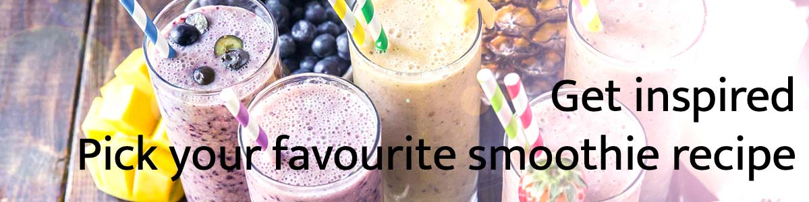
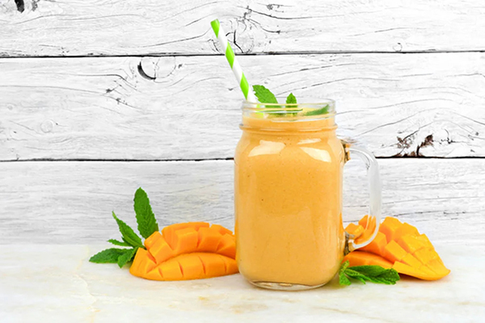

Home
Recipes
Catalogue
About
Let us be your inspiration for your next smoothie drink!

Everything starts with good blender..
Are you more of a picture type of person?

All recipes for these delicious-looking smoothie drinks you can find on this website!
Click
here
for more information.